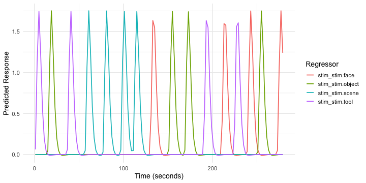
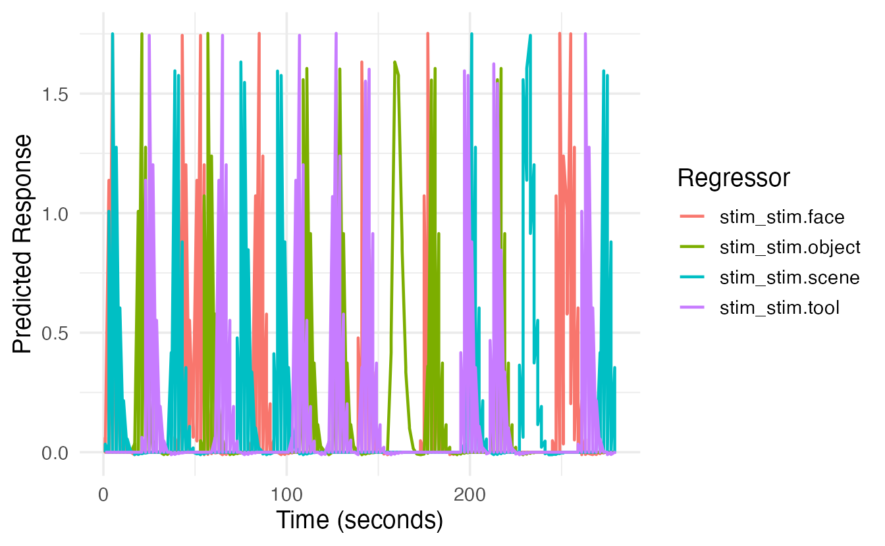
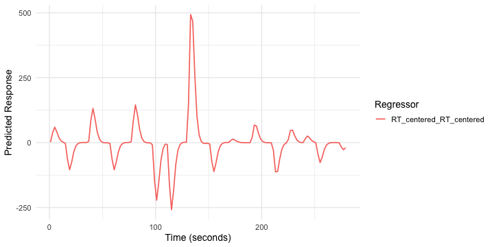
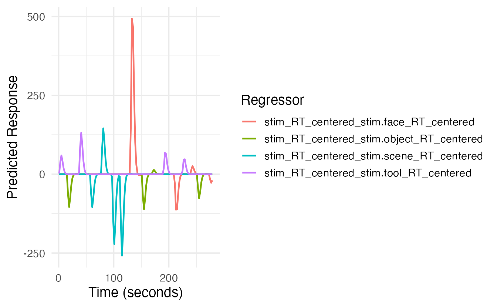
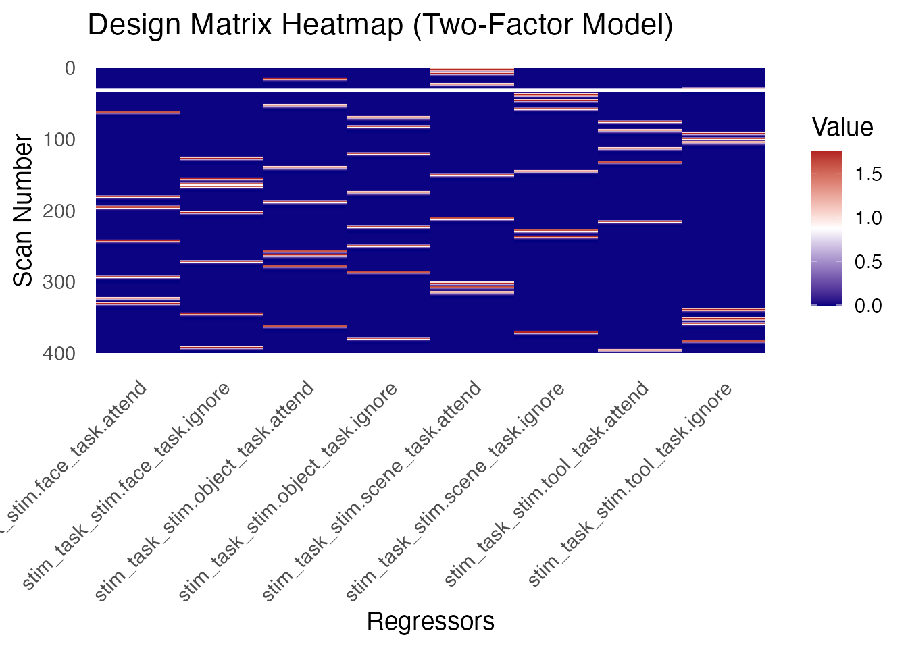
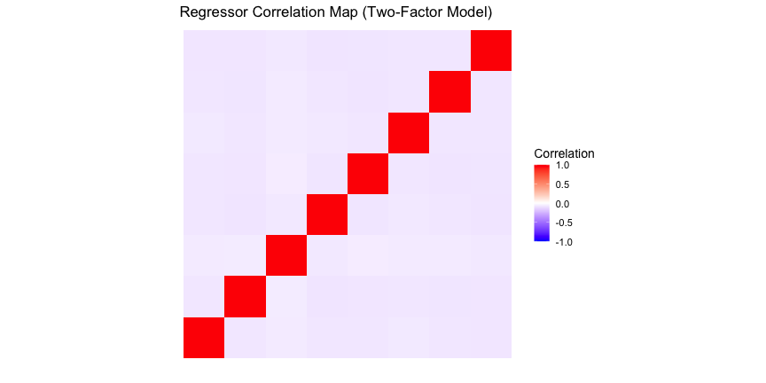

vignettes/a_04_event_models.Rmd
a_04_event_models.RmdAn event model describes the expected BOLD signal changes related to experimental events (stimuli, conditions, responses, etc.). It forms the core of the task-related component of an fMRI General Linear Model (GLM).
fmrireg primarily uses the event_model()
function to create these models. It takes experimental design
information (event onsets, conditions, durations) and combines it with
Hemodynamic Response Function (HRF) specifications to generate the task
regressors.
This vignette focuses on the common formula-based interface for
event_model(). There’s also a list-based interface
(event_model.list) and a more programmatic
create_event_model() function for advanced use cases.
Consider a basic design with four stimulus types (face, scene, tool, object), each presented 4 times for 2s, separated by a variable ISI (4-7s). The total scan duration is 70 TRs (TR=2s).
TR <- 2
cond <- c("face", "scene", "tool", "object")
NSTIM <- length(cond) * 4
# Construct the design table
set.seed(123) # for reproducibility
simple_design <- data.frame(
stim = factor(sample(rep(cond, 4))),
ISI = sample(10:20, NSTIM, replace = TRUE), # Increased ISI range for better spacing
run = rep(1, NSTIM),
trial = factor(1:NSTIM)
)
# Calculate onsets (cumulative sum of duration (2s) + ISI)
simple_design$onset <- cumsum(c(0, simple_design$ISI[-NSTIM] + 2))
# Define the sampling frame (temporal structure of the scan)
sframe_single_run <- sampling_frame(blocklens = 140, TR = TR)
head(simple_design)
#> stim ISI run trial onset
#> 1 tool 12 1 1 0
#> 2 object 20 1 2 14
#> 3 tool 18 1 3 36
#> 4 scene 18 1 4 56
#> 5 scene 18 1 5 76
#> 6 scene 12 1 6 96Now, we create the event_model. The formula
onset ~ hrf(stim) specifies that:
onset is the column in simple_design
containing event start times.hrf(stim) defines a term where the stim
factor levels determine the conditions. Each level will be convolved
with the default HRF (HRF_SPMG1).The block = ~ run argument links events to scanning runs
(here, just one run).
emodel_simple <- event_model(onset ~ hrf(stim),
data = simple_design,
block = ~ run,
sampling_frame = sframe_single_run)
# Print the model summary
print(emodel_simple)We can plot the generated regressors using plot() (which
uses ggplot2) or plotly() for an interactive
version.
# Static plot (ggplot2)
plot(emodel_simple)
# Interactive plot (plotly)
# plotly(emodel_simple)The plot shows the predicted BOLD timecourse for each condition
(stim level) convolved with the default HRF.
Let’s extend the design to two runs.
# Construct a design table with two runs
design_list <- lapply(1:2, function(run_idx) {
df <- data.frame(
stim = factor(sample(rep(cond, 4))),
ISI = sample(10:20, NSTIM, replace = TRUE), # Increased ISI range for better spacing
run = rep(run_idx, NSTIM)
)
df$onset <- cumsum(c(0, df$ISI[-NSTIM] + 2))
df
})
design_multi_run <- bind_rows(design_list)
# Sampling frame for two runs of 140s each
sframe_multi_run <- sampling_frame(blocklens = c(140, 140), TR = TR)
head(design_multi_run)
#> stim ISI run onset
#> 1 face 14 1 0
#> 2 object 17 1 16
#> 3 scene 11 1 35
#> 4 face 10 1 48
#> 5 tool 18 1 60
#> 6 face 20 1 80The event_model call remains the same, but now
block = ~ run correctly maps events to their respective
runs based on the run column and the
sampling_frame.
emodel_multi_run <- event_model(onset ~ hrf(stim),
data = design_multi_run,
block = ~ run,
sampling_frame = sframe_multi_run)
print(emodel_multi_run)
# Plot without faceting - the plot method will handle multiple blocks
plot(emodel_multi_run)
Now consider a design crossing stimulus type (stim) with
task instruction (task: attend vs. ignore).
cond1 <- c("face", "scene", "tool", "object")
cond2 <- c("attend", "ignore")
comb <- expand.grid(stim = cond1, task = cond2)
NSTIM_TF <- nrow(comb) * 4 # 8 conditions * 4 reps per run
# Design for two runs
design_two_factor_list <- lapply(1:2, function(run_idx) {
ind <- sample(rep(1:nrow(comb), length.out = NSTIM_TF))
df <- data.frame(
stim = factor(comb$stim[ind]),
task = factor(comb$task[ind]),
ISI = sample(6:15, NSTIM_TF, replace = TRUE), # Increased ISI range for better spacing
run = rep(run_idx, NSTIM_TF)
)
df$onset <- cumsum(c(0, df$ISI[-NSTIM_TF] + 2))
df
})
design_two_factor <- bind_rows(design_two_factor_list)
# Sampling frame for two runs, potentially longer
sframe_two_factor <- sampling_frame(blocklens = c(200, 200), TR = TR)
head(design_two_factor)
#> stim task ISI run onset
#> 1 scene attend 8 1 0
#> 2 scene attend 14 1 10
#> 3 object attend 12 1 26
#> 4 scene attend 11 1 40
#> 5 tool ignore 15 1 53
#> 6 scene ignore 14 1 70The formula onset ~ hrf(stim, task) automatically
creates regressors for the interaction of stim and
task. The term tag will default to
stim_task.
emodel_two_factor <- event_model(onset ~ hrf(stim, task),
data = design_two_factor,
block = ~ run,
sampling_frame = sframe_two_factor)
print(emodel_two_factor)
# Column names will be like stim_task_stim.face_task.attend
# Plotting all interaction terms can be busy; consider plotly
# plot(emodel_two_factor)
# plotly(emodel_two_factor)We can model how a continuous variable (like reaction time, RT)
modulates the amplitude of the BOLD response. This is done by including
the modulating variable within the hrf() call.
# Use the simple single-run design and add a simulated RT column
simple_design$RT <- rnorm(nrow(simple_design), mean = 700, sd = 100)
# It's often recommended to center parametric modulators
simple_design$RT_centered <- scale(simple_design$RT, center = TRUE, scale = FALSE)[,1]
head(simple_design)
#> stim ISI run trial onset RT RT_centered
#> 1 tool 12 1 1 0 756.2990 34.12857
#> 2 object 20 1 2 14 662.7561 -59.41425
#> 3 tool 18 1 3 36 797.6973 75.52696
#> 4 scene 18 1 4 56 662.5419 -59.62846
#> 5 scene 18 1 5 76 805.2711 83.10077
#> 6 scene 12 1 6 96 595.0823 -127.08808Here, hrf(stim) creates the main effect term (tag:
stim), and hrf(RT_centered) creates the
parametric modulator term (tag: RT_centered).
emodel_pmod <- event_model(onset ~ hrf(stim) + hrf(RT_centered),
data = simple_design,
block = ~ run,
sampling_frame = sframe_single_run)
print(emodel_pmod)
# Column names: stim_stim.face, ..., stim_stim.object, RT_centered_RT_centered
# Plot the RT parametric modulator term (using its term tag)
plot(emodel_pmod, term_name = "RT_centered") 
# plotly(emodel_pmod, term_name = "RT_centered")We can also model how a parametric modulator interacts with a factor.
For example, does RT modulate the response differently for faces
vs. scenes? The formula hrf(stim, RT_centered) creates
separate RT modulators for each level of stim.
Here, hrf(stim) is one term (tag: stim).
The interaction hrf(stim, RT_centered) is a second term
(tag: stim_RT_centered).
emodel_pmod_int <- event_model(onset ~ hrf(stim) + hrf(stim, RT_centered),
data = simple_design,
block = ~ run,
sampling_frame = sframe_single_run)
print(emodel_pmod_int)
# Columns: stim_stim.face, ..., stim_RT_centered_stim.face_RT_centered, ...
# Plot the interaction term (using its term tag)
plot(emodel_pmod_int, term_name = "stim_RT_centered")
# plotly(emodel_pmod_int, term_name = "stim_RT_centered")By default, hrf() uses the SPM canonical HRF
(HRF_SPMG1). You can specify a different HRF basis for any
term using the basis argument within the hrf()
call in the model formula.
Here are the main ways to specify the basis:
By Name (String): Use a recognized name for common HRFs:
"spmg1" (default), "spmg2",
"spmg3"
"gaussian", "gamma"
"bspline" or "bs" (use nbasis
to set number of splines)"tent" (use nbasis to set number of tent
functions)Using Pre-defined HRF Objects: Pass
an exported HRF object directly. Examples include
HRF_SPMG1, HRF_GAUSSIAN,
HRF_SPMG2, HRF_SPMG3,
HRF_BSPLINE, HRF_DAGUERRE,
HRF_DAGUERRE_BASIS.
Using Custom Functions f(t):
Provide your own function definition that accepts time t as
the first argument.
Using gen_hrf() Results: Create a
customized HRF using gen_hrf(), hrf_blocked(),
hrf_lagged(), etc., and pass the resulting HRF
object.
Discovering Available Options: You can easily
explore all available HRF types using the
list_available_hrfs() function:
# List basic information about available HRFs
list_available_hrfs()
#> name type nbasis_default is_alias
#> 1 spmg1 object 1 FALSE
#> 2 spmg2 object 2 FALSE
#> 3 spmg3 object 3 FALSE
#> 4 gamma object 1 FALSE
#> 5 gaussian object 1 FALSE
#> 6 bspline generator 5 FALSE
#> 7 tent generator 5 FALSE
#> 8 fourier generator 5 FALSE
#> 9 daguerre generator 3 FALSE
#> 10 fir generator 12 FALSE
#> 11 lwu generator variable FALSE
#> 12 gam object 1 FALSE
#> 13 bs generator 5 TRUE
# Get detailed descriptions
list_available_hrfs(details = TRUE)
#> name type nbasis_default is_alias description
#> 1 spmg1 object 1 FALSE spmg1 HRF (object)
#> 2 spmg2 object 2 FALSE spmg2 HRF (object)
#> 3 spmg3 object 3 FALSE spmg3 HRF (object)
#> 4 gamma object 1 FALSE gamma HRF (object)
#> 5 gaussian object 1 FALSE gaussian HRF (object)
#> 6 bspline generator 5 FALSE bspline HRF (generator)
#> 7 tent generator 5 FALSE tent HRF (generator)
#> 8 fourier generator 5 FALSE fourier HRF (generator)
#> 9 daguerre generator 3 FALSE daguerre HRF (generator)
#> 10 fir generator 12 FALSE fir HRF (generator)
#> 11 lwu generator variable FALSE lwu HRF (generator)
#> 12 gam object 1 FALSE gam HRF (object)
#> 13 bs generator 5 TRUE bs HRF (generator) (alias)For more details and examples of different HRF types, refer to the
documentation for hrf() and the “Hemodynamic Response
Functions” vignette
(vignette("a_01_hemodynamic_response", package = "fmrireg")).
Here are a few examples within the event_model
context:
# Example 1: Using basis name string "gaussian"
# Term tags: "stim", "RT_centered"
emodel_diff_hrf <- event_model(onset ~ hrf(stim, basis="spmg1") + hrf(RT_centered, basis="gaussian"),
data = simple_design,
block = ~ run,
sampling_frame = sframe_single_run)
print(emodel_diff_hrf)
# plot(emodel_diff_hrf, term_name = "RT_centered") # Plot the Gaussian RT regressor
# Example 2: Using a pre-defined HRF object (SPMG3)
# Term tag: "stim"
emodel_spmg3 <- event_model(onset ~ hrf(stim, basis=HRF_SPMG3),
data = simple_design,
block = ~ run,
sampling_frame = sframe_single_run)
print(emodel_spmg3) # Note nbasis=3 for the hrf
# Columns: stim_stim.face_b01, stim_stim.face_b02, ...
# plot(emodel_spmg3, term_name = "stim") # Plotting shows the 3 basis functions for one condition
# plotly(emodel_spmg3) # Better for exploring many conditions
# Example 3: Using a custom function (simple linear ramp)
# Term tag: "stim"
linear_ramp_hrf <- function(t) { ifelse(t > 0 & t < 10, t/10, 0) }
emodel_custom_hrf <- event_model(onset ~ hrf(stim, basis=linear_ramp_hrf),
data = simple_design,
block = ~ run,
sampling_frame = sframe_single_run)
print(emodel_custom_hrf)
# plot(emodel_custom_hrf, term_name = "stim")
# Example 4: Using gen_hrf() to create a lagged Gaussian
# Term tag: "stim"
lagged_gauss <- gen_hrf(hrf_gaussian, lag = 2, name = "Lagged Gaussian")
emodel_gen_hrf <- event_model(onset ~ hrf(stim, basis = lagged_gauss),
data = simple_design,
block = ~ run,
sampling_frame = sframe_single_run)
print(emodel_gen_hrf)
# plot(emodel_gen_hrf, term_name = "stim")To model each trial individually (e.g., for beta-series correlation),
use trialwise() in the formula. This creates a separate
regressor for every single event specified by the onset
variable.
emodel_trialwise <- event_model(onset ~ trialwise(),
data = simple_design,
block = ~ run,
sampling_frame = sframe_single_run)
print(emodel_trialwise)
# Term tag: "trialwise"
# Columns: trialwise_trial.1, trialwise_trial.2, ...
# Plotting trialwise models can be very dense!
# It generates one condition per trial.
# plot(emodel_trialwise)
# plotly(emodel_trialwise) # Use plotly to exploreOnce an event_model is created, you can extract its
components:
# List the terms in the model (names are now term tags)
terms_list <- terms(emodel_pmod_int)
print(names(terms_list))
#> [1] "stim" "stim_RT_centered"
# Expected: "stim", "stim_RT_centered"
# Get all condition names (full column names)
conds <- conditions(emodel_pmod_int)
# Example: stim_stim.face, stim_stim.scene, ...,
# stim_RT_centered_stim.face_RT_centered, ...
cat("\nFirst 6 column names:", head(colnames(design_matrix(emodel_pmod_int)), 6), "...\n")
#>
#> First 6 column names: stim_stim.face stim_stim.object stim_stim.scene stim_stim.tool stim_RT_centered_stim.face_RT_centered stim_RT_centered_stim.object_RT_centered ...
# Extract the full design matrix
dmat_events <- design_matrix(emodel_pmod_int)
cat("\nEvent design matrix dimensions:", dim(dmat_events), "\n")
#>
#> Event design matrix dimensions: 140 8
# head(dmat_events[, 1:6])
# Contrast weights and F-contrasts can also be extracted (see contrasts vignette)
# contrast_weights(emodel_pmod_int)
# Fcontrasts(emodel_pmod_int)Two functions help visualize the structure of the event design matrix:
design_map: Shows the matrix values as a heatmap.correlation_map: Shows the correlation between
regressors.
# Heatmap of the design matrix for the 2-factor model
design_map(emodel_two_factor, rotate_x_text = TRUE) +
labs(title = "Design Matrix Heatmap (Two-Factor Model)")
# Correlation map for the same model
correlation_map(emodel_two_factor, rotate_x_text = TRUE) +
labs(title = "Regressor Correlation Map (Two-Factor Model)")
# The column names in the plots will now reflect the new naming scheme.This event_model represents the task-related part of the
fMRI model. It’s typically combined with a baseline_model
(containing drift terms, intercepts, nuisance regressors) within
functions like fmri_model or fmri_lm to
perform a full GLM analysis.